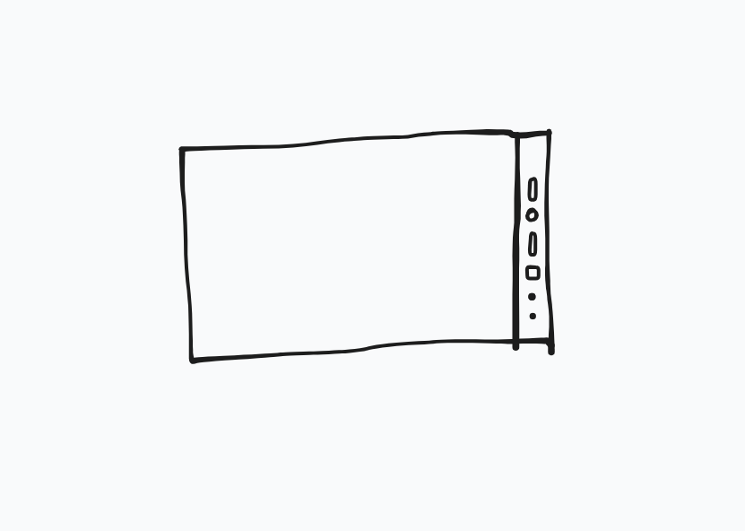
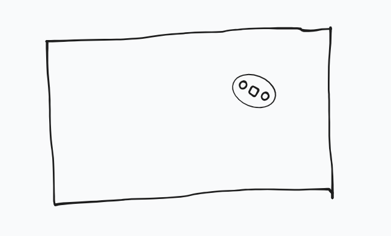

Blending desktop UX to touchscreens – a healthier computer interface for humans
Spending much time learning, working, studying on computer, there’s a kind of questions that always bothers me: Are we stuck with using computer like this? What is the best comupter interface for human? How long do we have to wait for a better computer interface? Do we have to sit like this forever?
Because I feel like any one of us could get as good at any thing, as long as we have enough time and attention working on the computer. But we have to have a place to sit and work on. So everytime we learn and work we have to be on the desk? The modern world requires us to sit at one place for long time to work. But we don’t feel we’re growing stronger like hunting and gathering, do we? We weren’t born for this, right? We want to be flexible, to move around, to use our bodies, aren’t we?
I wonder if we have to be stuck with this inevitable lifestyle?
As we are getting more advanced and developed, why can’t we be stronger? Or at least healthy and normally strong, flexible like we are born to be?
So what does a dream or ideal computer that aids human best look like?
I don’t think the VR/AR technology is the direction. Because I don’t think we want something that straps us in, traps us, and takes us away from our reality.
I think we would rather want a device that enable us to be more human, work like human, move like human.
Something that we can carry along, pick up, hold in our hands and drop easily like pen and paper, knife, sword, or wrench.
We have mobiles like ipads and smartphones, but how much can we actually do on them? Doesn’t it feel kinda distracting when working on touchscreens?
Working on an ipad is still not as efficient as working on desktop.
So I wonder why? Why working on ipad doesn’t feel right? What makes working on desktop different from working on touchscreen? Can we make the working on ipad or touchscreen better? I’m interested in what could be different.
This is what i have been imagining and experimenting what would be a more desirable ipad-liked device, a kind of ipad that would allow me to use easier, and the working experience may feel like on desktop.
First. What if we decouple the clicking on the touchscreen from the pointing?
I suggest when a finger touches the screen, it acts like a pointer pointing to an element on the screen. While there will be a button responsible for the clicking/selecting. This is somehow similar to the desktop mouse. So the fingers or the hand can rest on the screen without worrying they will cause or trigger any action. Because I feel like our touchscreens are more like water surface than paper surface. Each movement or touch on the screen will lead to a response. And everytime we make an interaction, the finger has to perform quite the same movement, touch down then up to finish the interaction. I think this might be what cause us to exert more coginitve power or attention.
The video above is a very primitive demo to show what it would look like. I imagine there can be 3 buttons corresponds to left click, scroll, right click or one or two more. And the cluster of buttons might be on the side or deattachable to hold on hand for bigger screen.


Then what concerns me the most is the text input method on touchscreen. The QWERT touchscreen keyboard still doens’t feel right to me. I feel that our fingers can swipe and slide quite fast and it may be better than the feeling of aiming and striking over a table of characters. Like writing a paragraph with pen may feel easier than texting it out on phone or ipad.
This is a kind of swipe based input method i arrived at through many ideas and experiments.
There are 6 keys. Trigger/activate a key by hit it first then drag the finger to hit the circle. Trigger a combo of 2 keys makes a character.
As I assume, these might be the pros:
- Allow finger to slide and swipe, make the experience feels like writing.
- Instead of drawing the whole character shape, you only need 2 deliberate strokes, so it may be faster.
- Less cognitive load, because you don’t have to continuously aim and choose over a table of characters.
Things to concern:
- Speed. factors: which arrangement of keys to characters is the most optimal, sampling rate of the screen, and the screen’s surface friction
- Learning curve to get familiar.
A lot of times I did look at and question if technology like handwritten text recognition is more suitable or convenient but it doesn’t quite hit the mark for me. It is more like a correcting filter layer after the finger has made the movement/stroke. This is somehow make us rely on the machine intelligence/ability to understand the context. But what I want to suggest is that we might prefer to move our finger more precisely. We might want to use and improve our bodies, to make our hands and fingers more agile and stronger. This may require us to have kind of a continuous feedback for the hands/fingers to adjust their movements. Like with the physical keyboard, the hands and fingers are given a continuous tactile feedback because they are constantly touching and feeling the keys. While writing with a pen relys more on the visual feedback from the character shape. The touchscreen keyboard however doesn’t allow us to continuously touch it, but rather makes us touch it in discrete bouts. So it’s hard for our hands to readjust, since they are prone to imprecision.
So, this is my attempt to explore whether there might be a better way for humans to use computers.
It just doesn’t make sense to me, how we are living and working with computers now.
I really wish that we could take back our attention.
What if we have a device that we enjoy using more, that doesn’t drain or deplete us that we can pick up like paper to draw and to write? What if we can learn easily and enjoyably?
A device that might allow us to move more like human, a device that makes working like playing.
I really want to continue to work on this, just as simple as having a good explanation first.